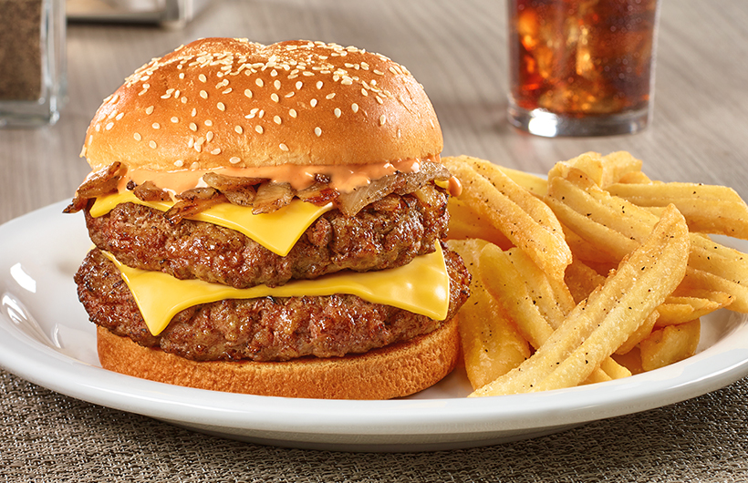
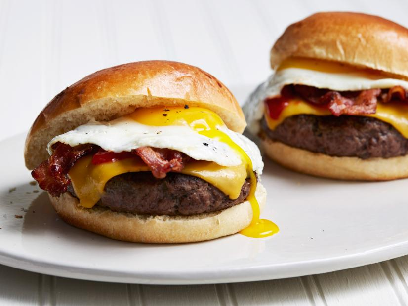
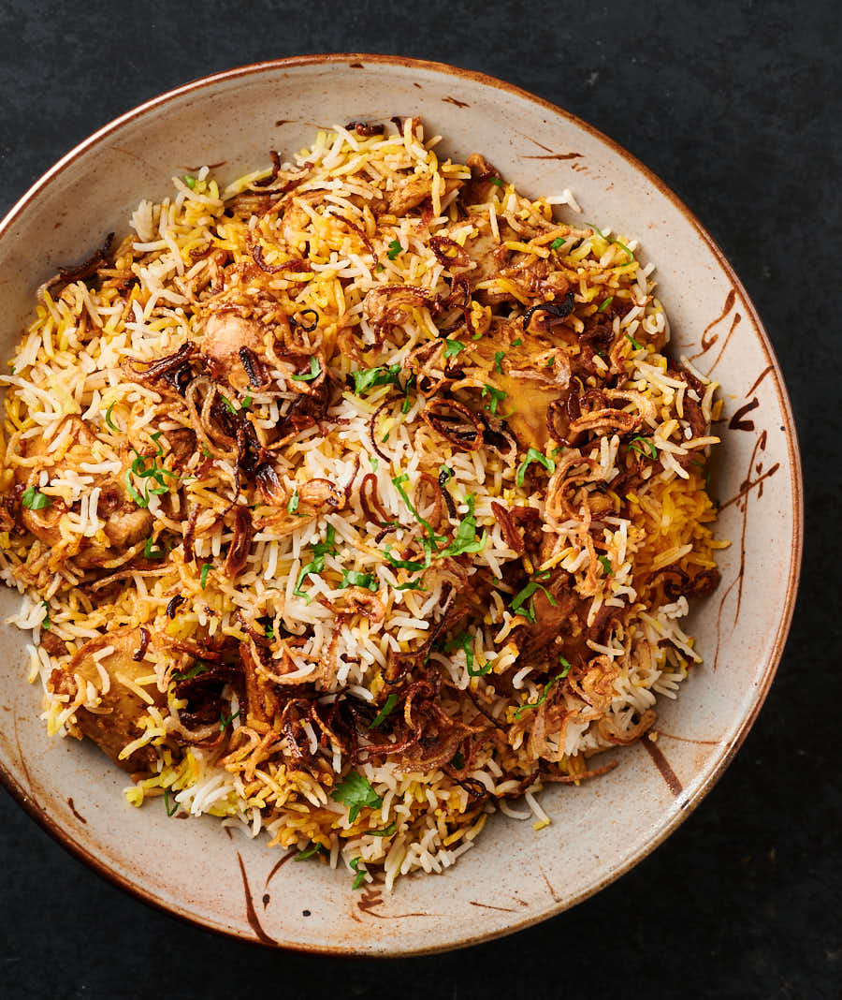

Al-Amaan
Our Menu

Buttermilk Pancakes $15.99
Buttermilk Pancakes have a light and spongy texture and their flavor only hints of the richness and tanginess
that buttermilk offers.Buttermilk pancakes are the ultimate comfort food no matter which way you stack, slather, syrup’ize or slice ’em.

Diner Double $12.99
The American Vintage '50s Diner Double Beef burger is, if my weak Japanese skills can be trusted, their image of a 1950s diner steak plate, but in hamburger form:
double 100 percent beef patties with a fried egg, a slice of cheese, onions, Chicago-style steak sauce, and a mashed potato sauce on a classic whole wheat bun.

Egg Attack $15.99
Press down on the bun. Like slurping a crawfish head or licking a yogurt lid, puncturing the yolk via bun compression is tactilely satisfying. When you do,
watch it ooze, egg yolk lewdly spilling over the sides of the sandwich.The yellow against the char of the patty makes for an appealing visual contrast. The controlled spill feels very art school.

Chicken Fajitas $22.99
Easy Chicken Fajitas are one of our all-time favorite dinners. Tender juicy chicken breasts, fresh crisp peppers, and sweet onions tossed in an easy homemade seasoning and piled high
in tortillas. Top these easy fajitas with cheese, sour cream, lettuce, guacamole, and Pico de Gallo!

Flipino Chicken $17.99
Chicken braised in vinegar and soy sauce with lots of garlic. This easy, savory chicken dish has become a staple in my home. As this simmers, your kitchen fills with an intoxicating sweet
and sour aroma that will leave you anxious to eat.

Chicken Biryani $10.99
Biryani is a mixed rice dish originated by Muslims of the Indian subcontinent. It is made with Indian spices, rice, and meat, and sometimes, in addition, eggs and/or vegetables such as potatoes in
certain regional varieties.